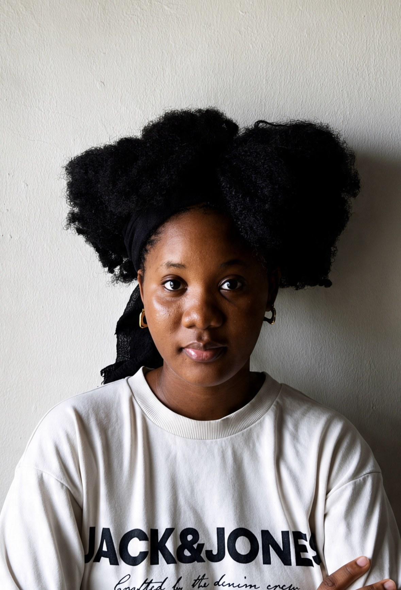
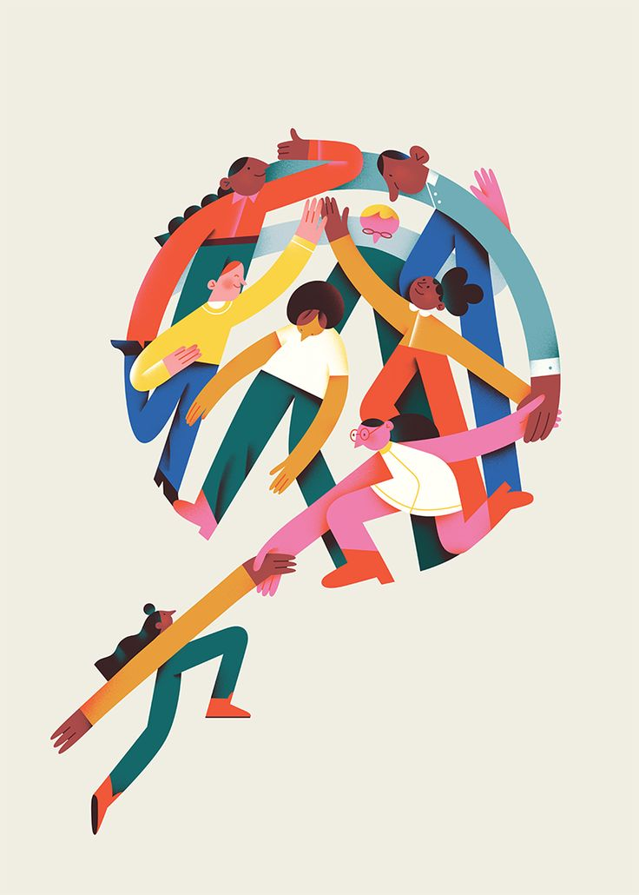
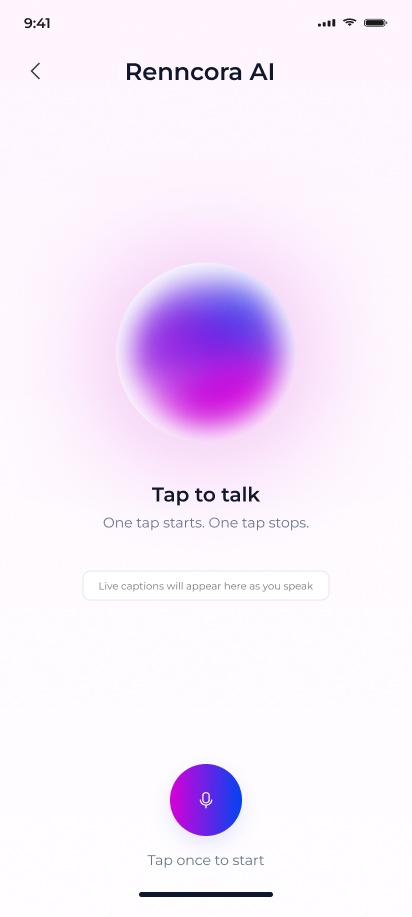
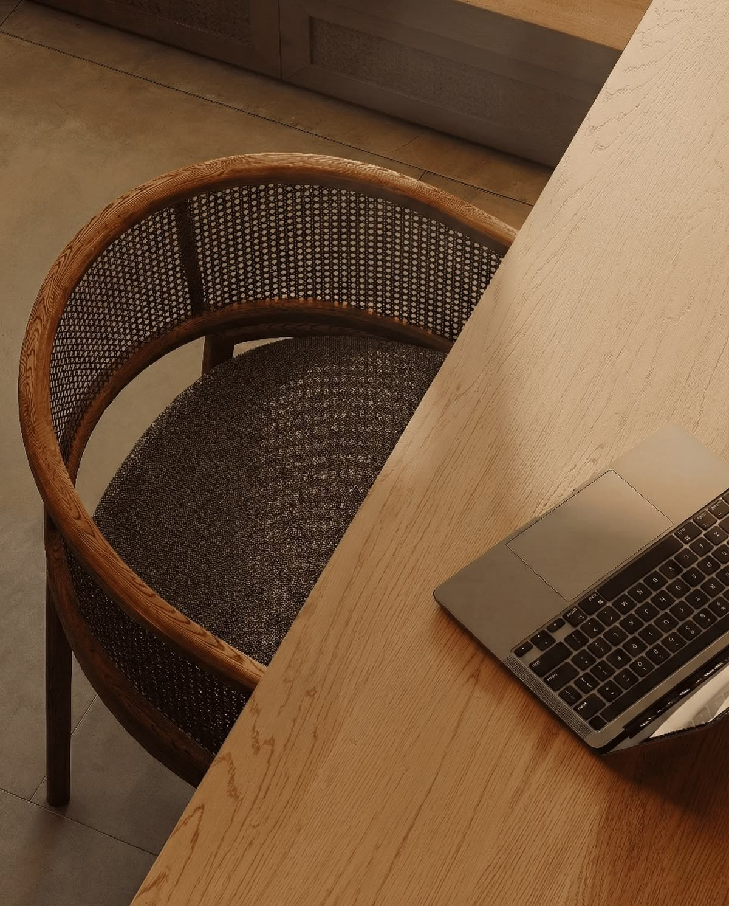
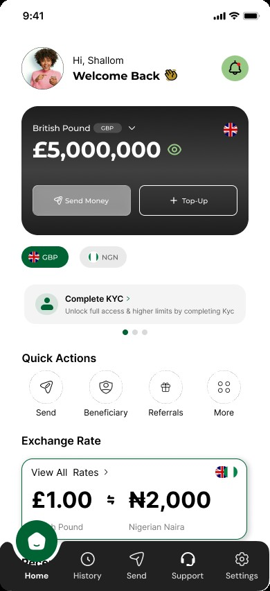
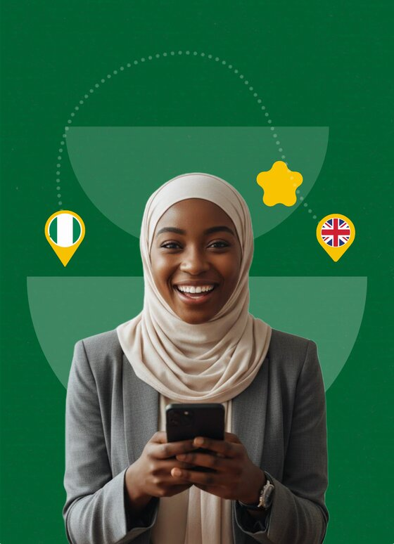
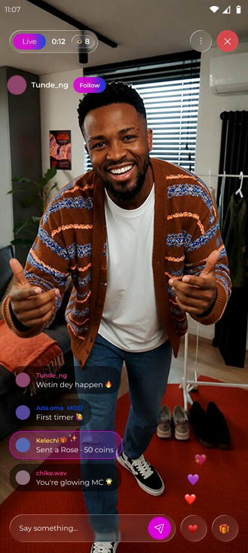
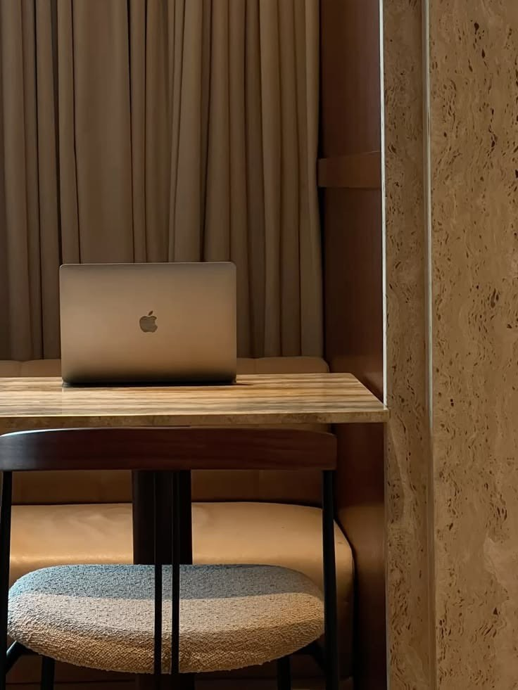
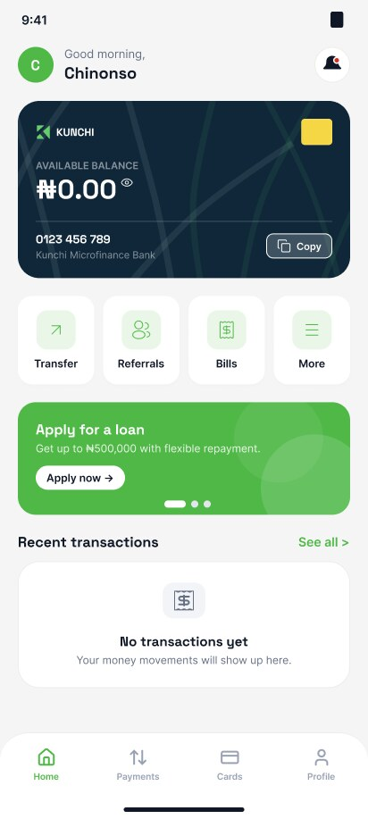

about
I make complex products simple enough to trust. For five years I've designed products where one confusing screen costs a customer: cross-border payments, digital banking, document automation and AI assistants.
I own design end to end, from research to post-launch analytics, and I build design systems engineers actually use. I'm currently Lead Product Designer at Renncora.
ExperienceSelected roles and projects
2026 — PresentLead Product DesignerRenncoraAI · Creator platform
2024 — PresentProduct DesignerBroadMoney PaymentFintech · Remittance
2026Product DesignerDoxflowyB2B SaaS
2026Product DesignerKunchi MFBDigital banking
2025 — 2026UI/UX DesignerWosi WosiFintech · Remittance
2025Product DesignerHelp2PayPayments
2026Product DesignerTax ClarityCivic tech
2025Product DesignerStack LayerAI · Web
Product design
- End-to-end product design
- UX and UI
- Prototyping
- Mobile and web
Research and data
- Monthly UX audits
- Microsoft Clarity
- UXCam and PostHog
- Funnel analysis
Systems and AI
- Design systems from scratch
- Tokens and documentation
- AI product design
- WCAG AA accessibility
Morayo Akinkunmi













Founder of The Design Geeks Community.
Since July 2026 I've run design critiques and live sessions and mentored product designers as they grow their craft. Leading it has sharpened how I give feedback and explain design decisions.
contact